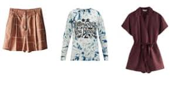

Online Shopping
Online Shopping
It is impossible to imagine an online experience without online shopping. Retail e-commerce sales worldwide are forecast to more than double between 2018 and 2023, surpassing 6.5 trillion U.S. dollars in 2023. Not only the volume of online sales shows optimistic figures and projections, but also web and mobile-influenced offline sales are forecast to increase in the coming years.
Internet-savvy buyers are determined to spend time researching products online and reading online reviews in order to get the best deal possible.
U.S. consumers can chose from a variety of brand sites, retail platforms and online marketplaces to purchase their products from and preference can vary by product category: During a March 2019 survey, only 13 percent of U.S. shoppers stated that they had purchased food and grocery on a third-party marketplace, whereas 42 percent of respondents who had bought books in the past year had chosen that particular purchase channel.


Made by F@rZ@n@